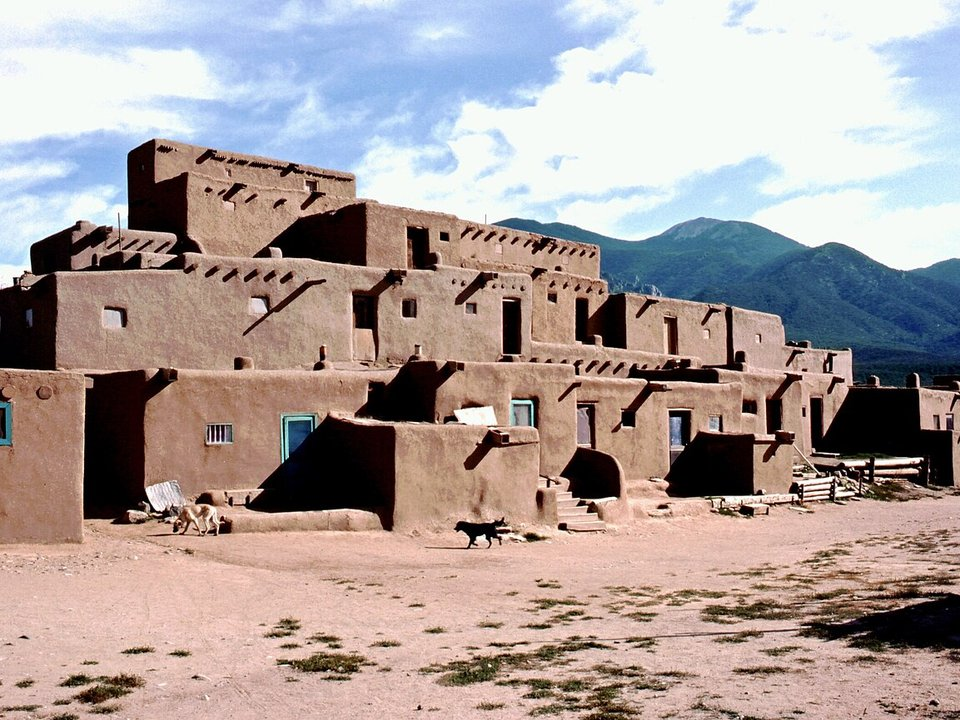

Near the plaza · Luxury resort
El Monte Sagrado
An eco-luxury resort with a spa, a short walk from the plaza.
Official details for El Monte SagradoAdobe, art and a thousand-year-old pueblo.
Taos is one of America’s great small art towns, a cluster of adobe galleries and cafés around a Spanish plaza with the Sangre de Cristo Mountains behind. Land at Taos Regional on the mesa, cross the Rio Grande Gorge Bridge 650 feet above the river, visit Taos Pueblo, continuously lived in for about a thousand years, stay at the Historic Taos Inn or El Monte Sagrado, and ski Taos Ski Valley in winter.

In our plane it’s a short flight.
Where we’re staying Dinner Things to do The plan
I’ll handle the flight planning; you handle the fun planning!
Time illustration: direct distance at 150 KTAS plus 15 minutes for departure and arrival, matching the discovery page. Use ForeFlight for your actual flight plan.
Check the weekend weather at both ends → Flight category, your minimums and the crosswind on the best runway.
More in Aviation & getting around below. Crew cars change often: call the FBO before you go. How to have a rental car waiting at the FBO · Know something we missed? Tell us.
KSKX, Taos Regional, is a non-towered airport at 7,095 feet with an 8,600-foot main runway on the mesa, about 15 minutes from the plaza.
Taos Regional Airport, Taos, NM
High elevation with strong, gusty winds off the mountains; compute performance carefully. After-hours fuel by call-out (575-758-5436). No live fuel price is shown.
High desert flying: high density altitude in summer, strong gusty spring winds and mountain wave, afternoon monsoon storms from July to September, winter snow, and long distances between airports. About 1320 nm from Myrtle Beach: two long days each way with several fuel stops. Plan a week, or overnight on the way out and back.
Rates and availability need travel dates. Book ski holidays early.
An eco-luxury resort with a spa, a short walk from the plaza.
Official details for El Monte SagradoA 1936 adobe inn with a famous bar.
Official details for Historic Taos InnA historic hotel right on the plaza.
Official details for Hotel La Fonda de TaosPrices and availability for your dates, through our partner Stay22. This is an affiliate link: we may earn a commission at no cost to you. The picks above are never paid.
Reserve weekend dinners.
Seasonal cooking in an old adobe chapel.
Official details for The Love AppleA Taos fine-dining standby.
Official details for Lambert’s of TaosChile and margaritas at the Taos Inn.
Official details for Doc Martin’sBeer and music near the airport.
Official details for Taos Mesa BrewingTaos Pueblo closes for ceremonies at times; check before you go.
This prototype links to the local visitor site. It does not yet match events to your travel dates.
Taos Ski Valley.
Taos Ski Valley for Ski seasonAspens in the mountains.
New Mexico True for Fall colorA procession and bonfires at Taos Pueblo.
Taos Pueblo for Pueblo bonfiresCheck the local calendar when choosing a weekend, and confirm dates and tickets with the organizer.
A sample Taos weekend. This is a two-day flight each way; plan a week. No bookings or availability confirmed.
Land at KSKX mid-morning.
The Rio Grande Gorge Bridge.
Lunch at Doc Martin's, then back to the airport.
Land at KSKX, subject to weather, density altitude and your actual flight plan.
The Rio Grande Gorge Bridge on the way in.
Margaritas and dinner at Doc Martin’s.
Taos Pueblo.
Galleries around the plaza.
Dinner at The Love Apple.
The Millicent Rogers Museum.
Compute takeoff performance for the temperature and allow time at the FBO.
Desert afternoons are hot, bumpy and gusty; leave in the morning.
Taos Pueblo.
Galleries on the plaza.
Dinner at The Love Apple.
This guide is part of a multi-stop flying trip. Set your dates and aircraft, then swap stops to make it your own.
These details make the difference between an appealing list and a usable getaway.
Lodging, then a car.
About 1,320 nm from Myrtle Beach: two days each way.
Taos is about 7,000 feet.
May to October, and ski season.
Picks and links reviewed by WingAway Weekends. Hours, prices, menus and availability change often, so confirm directly with each place before booking. Spotted something out of date, or have a favorite we missed? Email us at hello@wingawayweekends.com.
WingAway Weekends helps you discover the destination. Use ForeFlight and current official aviation information for route, performance, weather, NOTAMs and preflight decisions. Flight planning and PIC responsibility stay with the pilot.